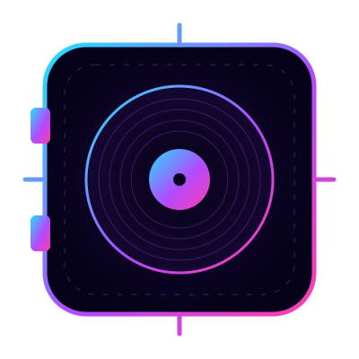
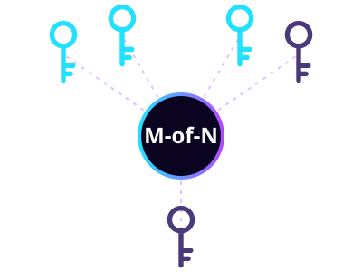

MUSIG
Multi-Sig NFT Album Vault
& Exclusive IP Ownership
Own a piece of the music that matters. Master recordings and original NFT albums are locked inside Multi-Sig Vaults — collectors co-bid, co-own, and vote together on every commercial license.
—

Music IP, co-owned on-chain.
The most valuable songs in the world are owned by a handful of labels and funds. Musig opens that door: rare master recordings and original NFT albums become commercial-grade NFTs held in a shared Multi-Sig Vault, so a community of collectors can own them together.
- Exclusive IP assets secured by multi-signature custody
- Collective bidding — pool with other collectors for premium tracks
- Licensing for film, ads & games decided by keyholder vote
How the Multi-Sig Vault works
No single wallet can move the master. Every important decision needs several keyholders to agree.
Mint the master
An artist or rights holder tokenizes a master recording or original album as a rare commercial NFT, with the rights it carries clearly described.
Lock in the vault
The NFT is deposited into a Multi-Sig Vault — a smart wallet that only moves assets when the required number of keyholders sign.
Co-bid at auction
Web3 investors and music collectors pool funds to bid together for tracks no one would buy alone.
Hold the keys
Winning co-owners become keyholders of the vault. Their share is recorded on-chain and visible to everyone.
Vote on licensing
A studio wants the song for a film or campaign? A proposal is opened and keyholders approve or reject it with their signatures.

Like a bank vault that needs several keys turned at once.
A vault is set up with N keyholders and an approval threshold M. For example, in a 3-of-5 vault, any three of the five keyholders must sign before a license is granted or an asset is moved.
- No single point of failure — one lost or compromised key can't drain the vault
- No rug — the master can't be sold off by one member
- Every proposal, signature and decision is verifiable on-chain
Licensing, decided together
Sync licensing is how great songs reach new audiences. Musig lets the community that owns a track decide where it's heard.
Film & TV sync
Studios request a track for a scene, trailer or series. Keyholders review the terms and sign off on-chain.
Advertising campaigns
Brands license iconic sounds for commercials and social campaigns — approved only when the vault agrees.
Games & metaverse
Soundtracks for games, virtual concerts and immersive worlds, licensed transparently from the vault.
Remix & sampling
Producers can propose official remixes or samples, with permissions granted by the co-owners.
Live & broadcast
Events, radio and streaming placements handled as on-chain proposals with clear, public decisions.
Archive & legacy
Rare recordings preserved for the long run by a community that cares about them — not hidden in a catalog.
Artists. Collectors. Studios.
Keep your legacy close to fans
- Raise value from a master without handing it to one buyer
- Turn superfans into co-owners and advocates
- Transparent on-chain record of who holds what
Own culture, not just a JPEG
- Co-bid on rare tracks with other collectors
- Hold a real key and a real vote
- Shape where the music appears next
One clear place to license
- Submit a licensing proposal directly to the vault
- Decisions are signed and verifiable
- An engaged community behind every sound
Tokenomics
$MUSIG is the community token of the Musig movement — the badge of everyone who believes music IP should be shared, transparent and on-chain.
Community access
Join the circle following vault launches, auctions and licensing proposals.
Community voice
Help signal which artists, albums and masters the community wants to vault next.
Multichain culture
One identity across ecosystems, so music lovers can join from the chain they already use.
How to get $MUSIG
Get a wallet
Fund it
Copy the CA
Swap & join
Roadmap
Intro
- Launch $MUSIG
- Website, X & community
Verse
- Vault framework & docs
- Artist & collector onboarding
- First curated master collection
Chorus
- Collective auctions for vaulted NFTs
- Keyholder voting dashboard
- Licensing proposal portal
Encore
- Studio, agency & brand partnerships
- Cross-chain vaults
- Global music IP community
FAQ
What is Musig?
Musig is a Web3 music concept where master recordings and original NFT albums are held in Multi-Sig Vaults, letting groups of collectors co-own exclusive music IP and vote together on commercial licensing.
What is a Multi-Sig Vault?
A multi-signature (multi-sig) vault is a smart wallet controlled by several keys. Actions — like granting a license or moving an asset — only happen when a set number of keyholders (M of N) sign.
How does co-ownership work?
Collectors pool together to bid on a vaulted NFT. Winners become keyholders, and their role is recorded on-chain so anyone can verify who holds the keys.
Who approves a film or ad license?
The vault's keyholders. A licensing request is opened as a proposal, and it is approved only if the required number of keyholders sign.
How do I avoid fake tokens?
Only use the contract addresses shown on this site and on our official X account . Never share your seed phrase — the team will never DM you first.
Turn up the vault.
Follow for vault launches, auctions and the official CA.